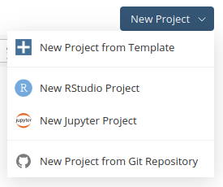
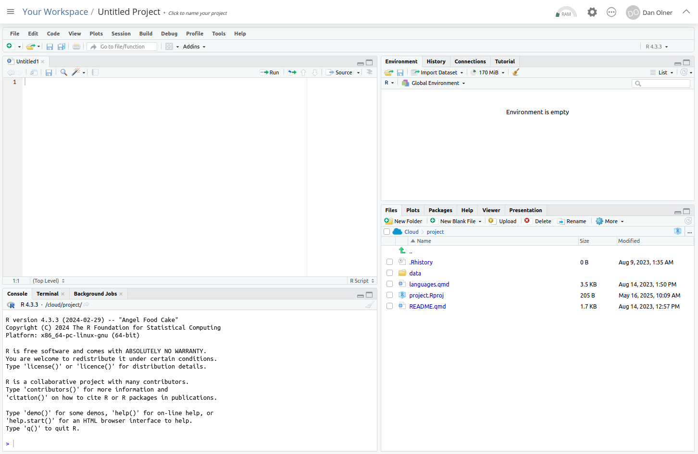
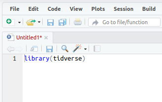

2+2[1] 4Dan Olner
May 16, 2025
I’m running an “R + regional economic data” taster session in June. It won’t be necessary to use R during the session to follow along - but if you want to have a go at running the code I’ll be talking through and don’t yet have R/RStudio, here’s how to get quickly set up, either online through a browser, or with R and RStudio installed on your own computer1.
To do this, you’ll need to do one of the following:
Use RStudio in your browser with a posit.cloud account. The free version is limited (very small memory, for instance) but it’s a very quick and easy option to have a play with R and will be fine for the taster session. The next section below talks through setting up in posit.cloud.
Install R and RStudio on your own computer. If you have a machine where you’re able to install your own software then go here to download/install the right version of R for your operating system, and here to download/install RStudio (again, pick the correct one for your OS). (Though see bullet point 2 below if using a work machine.)
Any questions/issues, let me know at d dot older at sheffield dot ac dot uk or message me on LinkedIn and I’ll try to answer.
Here’s the steps to get up and running through a browser using posit.cloud.

Now you should either be in RStudio online through posit.cloud or if using RStudio installed on your own computer, open that now. From here…

Let’s stop for a moment and look at the separate windows in RStudio.
(Note that all code blocks in this post have a little ‘copy to clipboard’ icon in the top right when you hover, if you want to just copy the code for pasting into RStudio).
Or e.g.
We will be using the tidyverse package/library in the session. If you’re using posit.cloud, this package comes pre-installed in the template we selected. However, if you’re using RStudio on your own machine, you will need to install the tidyverse package yourself before we load it as a library.
To do this, just run the following code in the console (the same place we just did our ‘2+2’ test, in the bottom left panel in RStudio.)
You should get a confirmatory message once the package has installed successfully (though it may take a minute or two).
Now, whether in posit.cloud or on your own computer, you should have the tidyverse package available.
It now needs to be loaded as a library before we can use it:
When you’ve put that in, the script title will go red, showing it can now be saved (it should look something like the image below).

All code will run in the console - what we do with scripts is just send our written code to the console. We do this in a couple of ways:
Let’s do #1: Run the code line by line.
libary(tidyverse) line in the script (if it’s not there already), either with the mouse or keyboard. (Keyboard navigation is mostly the same as any other text editor like Word, but here’s a full shortcut list if useful.)You should see the code get sent to the console, and a message like the one below confirming that R is ‘Attaching core tidyverse packages’. The tidyverse library is now loaded.
── Attaching core tidyverse packages ──────────────────────── tidyverse 2.0.0 ──
✔ dplyr 1.1.4 ✔ readr 2.1.5
✔ forcats 1.0.0 ✔ stringr 1.5.1
✔ ggplot2 3.5.0 ✔ tibble 3.2.1
✔ lubridate 1.9.3 ✔ tidyr 1.3.1
✔ purrr 1.0.2
── Conflicts ────────────────────────────────────────── tidyverse_conflicts() ──
✖ purrr::%||%() masks base::%||%()
✖ dplyr::filter() masks stats::filter()
✖ dplyr::lag() masks stats::lag()
ℹ Use the conflicted package (<http://conflicted.r-lib.org/>) to force all conflicts to become errorsThat’s it for now! That’ll be enough to be set up for the session. Any questions/issues, let me know at d dot older at sheffield dot ac dot uk or message me on LinkedIn.
Installing R can be tricky on work machines if your organisation isn’t familiar with it. R needs to access the internet to install libraries, for instance, and this can sometimes hit firewall issues. If you end up having this problem, I suggest trying the online posit.cloud route for now.↩︎
You can treat the terms ‘package’ and ‘library’ as interchangeble in R, but if you want to know the reason: if packages are like books, libraries are where the books are stored - we use the same name as the package to load a library. One of many examples of R being unnecessarily confusing with its language!↩︎